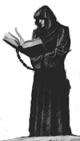
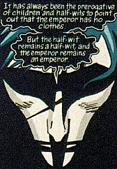

QUOTES
...next thing you're going to be moaning that I ought to get a scythe...
Death, in Season of Mists
Suggested by Kristen
Your life is your own. Your death, likewise. Always and forever your own. Farewell. We shall not meet again.
Dream, in Fables and Reflections
Suggested by Jessica
It means that we're just dolls. We don't have a clue what's really going down, we just kid ourselves that we're in control of our lives while a paper's thickness away things that would drive us mad if we thought about them for too long play with us, and move us around from room to room, and put us away at night when they're tired, or bored.
Rose Walker, in The Doll's House
Suggested by Me <candyman@metro2.k12.mn.us>
You know something? We came here for you, a long time ago, when you died. Well, it wasn't here and that wasn't you, but we did anyway.
Delirium to Despair, in The Wake
Suggested by Asphyxi8
It is a fool's prerogative to utter truths that no one else will speak.
Dream, in Dream Country
Suggested by Jeeves
- I think the whole world's gone mad.
- Uh-Uh. It's always been like this. You probably just don't get out enough.
Sexton Furnival and Death, in Death: The High Cost of Living
Suggested by TJ
My Lord? Is that you?
The Gryphon who guards the gate, in Brief Lives
Suggested by Kirk
Watch out for the HUMAN.
Morpheus to Constantine, in Preludes & Nocturnes
Suggested by Simon Bacon
Bodies are strange. Some people have real problems with the stuff that goes on inside them. You find out that inside someone you know there's just mucus and meat and slime and bone. They menstruate, salivate, defecate and cry. You know? Sometimes it can just kill the romance. You know that?
Eve, in Fables and Reflections
Suggested by Alyana
Funny, she looks smaller from outside her head.
Delirium, in Brief Lives
Suggested by Ace Kranzel
I know how gods begin, Roger. We start as dreams. Then we walk out of dreams into the land. We are worshipped and loved, and take power to ourselves. And then one day there's no one left to worship us. And in the end, each little god and goddess takes its last journey back into dreams, and what comes after, not even we know. I'm going to dance now, I'm afraid.
Ishtar, in Brief Lives
Suggested by REESE
- Life is no play. We meet people once, and never see them again. There is no shape to events, no point at which we turn to the audience for phrase. No time at which we step behind the stage, to see the actors changing their wigs, ang painting their faces, and muttering their lines.
- But that is Precisely where you are now. Welcome to my House.
Will Shakespeare and Dream, in The Wake
Suggested by TJ
I could never again be an angel... Innocence, once lost, can never be regained.
Lucifer, in Season of Mists
Suggested by T.A.B.
You know the best thing about aeroplanes? Apart from the peanuts in the little silver bags, I mean. It's looking out of the windows at the clouds, and thinking, maybe I could go walking in there. Maybe it's a special place where everything's okay. Sometimes I do go walking in the clouds. But it's just cold and wet and empty, but when you look out of a plane it's a special world...
Delirium, in Brief Lives
Suggested by Ariadne
Wherever I go , the message is the same: "Dream it!"
Mistress, in Dream Country
Suggested by Warewullf
"What was it, in the end?"
"What it always is. A handful of yarn; a little weaving and stitching;
some embroidery perhaps. A few loose ends, but that's only to be
expected..."
Clotho and Lachesis, in The Kindly Ones
Suggested by Kate Nepveu
- Nobody died. How can you kill an idea? How can you kill the personification of an action?
- Then what died? Who are you mourning?
- A puh-point of view.
Cain, Elbis O'Shaughnessy, and Abel, in The Wake
Suggested by Mr. Lime
Nobody's creepy from the inside, Hazel. Some of them are sad, and some of them hurt,
and some of them think they're the only real thing in the whole world. But they're not creepy.
Death, in The Wake
Suggested by Cheshyre
You are utterly the stupidest, most self-centered, appallingest excuse for an anthropomorphic personification on this or any other plane!
Death, in Preludes & Nocturnes
Suggested by Wyvern
All right. I admit it. He's got a point.
The sunsets are bloody MARVELOUS, you old bastard.
Satisfied?
Lucifer, in Season of Mists
Suggested by Angelwinter
So I said, "Dahling, when God put teeth in your mouth, He ruined a perfectly good arsehole."
A male stripper, in Brief Lives
Suggested by Sara Byoki
Can I have more water, please? My hair drank most of it.
Lyta Hall, in The Kindly Ones
Suggested by Wyvern
Our existence deforms the universe. That's responsibility.
Delirium, in The Kindly Ones
Suggested by Wyvern
What power would hell have if those imprisoned there could not dream of heaven?
Dream, in Preludes & Nocturnes
Suggested by rivka
Be seeing you...
Death, in Dream Country
Suggested by Mateo D´Acosta
You don't have to stay anywhere forever.
Edwin Payne, in Season of Mists
Suggested by Abby
People think dreams aren't real just because they aren't made of matter, of particles.
Dreams are real. But they are made of viewpoints, of images, of memories and puns and lost hopes.
John Dee, in Preludes & Nocturnes
Suggested by miszche
"His madness... His madness keeps him sane."
"And do you think he is the only one, my sister?"
Delirium and Dream, in Fables and Reflections
Suggested by Ariel
"If the city was dreaming," he told me, "then the city is asleep. And I do not
fear cities sleeping, stretched out unconscious around their rivers and estuaries, like cats in the moonlight.
Sleeping cities are tame and harmless things. What I fear," he said, "is that one day the cities will waken.
That one day the cities will rise."
The man who got lost in the dreams of a city, in World's End
Suggested by Ariel
"Say, whoever you are, you know what Freud said about dreams about flying? He said it means you are really dreaming about having sex."
"Really? Then tell me, what does it mean when you dream about having sex?"
Rose Walker and Dream, in The Doll's House
Suggested by Amorpheum
"Is that all i get, is that all there is?"
"Yes, i'm afraid so."
Death, in Preludes & Nocturnes
Suggested by renee johnson
And the night was over, and the day began.
The stone doors of the mausoleum opened (apparently of their own volition, for there was no one to open them) and the people, and the dreams, and the gods, and all manner of other creatures and beings, went in, each one after its fashion.
And already the conversations and indiscretions and intoxications of the night before had begun to vanish, like the mists of night, in the heat of the morning.
The mourners took their seats, one by one, without hesitation or question. No one directed them, but they walked into their own seats and sat down, as quietly and efficiently as if they'd been rehearsing for this moment all their lives.
The people moved as if their every move were foreordained, as if they had no true will of their own.
As if every action were written long ago, in a book.
Narrator, in The Wake
Suggested by Raguhel
"We of the Endless are the servants of the living -- We are NOT their masters. WE exist because they know, deep in their hearts, that we exist."
Dream, in The Doll's House
Suggested by Indiana Jerico
Not yet.
Bernie Capax, in Brief Lives
Suggested by Andy
We do what we must, Lucien. Sometimes we can choose the path we follow. Sometimes our choices are made for us. And sometimes we have no choice at all.
Dream, in Season of Mists
Suggested by Teleute
"I am that merry wanderer of the night"? I am that giggling-dangerous-totally-bloody-psychotic-menace-to-life-and-limb, more like it.
Peaseblossom, in Dream Country
Suggested by Toerag
...The price of getting what you want, is getting what once you wanted.
Dream, in Dream Country
Suggested by Mateo D´Acosta
'Why did you hunt me?' he asked her. 'Why did you flee?'
'I hunted you because I love you more than mortal man has ever been loved by a woman. And I fled you because it is not given to mortals to love the endless. Only disaster can follow from this.'
Dream and Nada, in The Doll's House
Suggested by Ines
Let us meet again, Robert Gadling. In this tavern of the White Horse. In a hundred years.
Dream, in The Doll's House
Suggested by Alex
Facets, Matthew.
Facets.
Dream, in The Kindly Ones
Suggested by God Jones
I should have stayed with him. I should have never left him there. He was my friend and I left him to die.
Matthew the Raven, in Unknown
Suggested by Jerc
Anyway: I'm not blessed, or merciful. I'm just me. I've got a job to
do, and I do it. Listen: even as we're talking, I'm there for old and
young, innocent and guilty, those who die together and those who die
alone. I'm in cars and boats and planes; in hospitals and forests and
abbatoirs. For some folks death is a release, and for others death is an
abomination, a terrible thing. But in the end, I'm there for all of them.
Death, in Dream Country
Suggested by Elspeth
Omnia Mutantur, Nihil Interit.
'Everything changes, but nothing is truly lost.'
Roman Soldier translated by Dream, in The Wake
Suggested by Draggun
Flowers gathered in the morning,
Afternoon they blossom on,
Still are withered in the evening:
You can be me when I'm gone.
The fortune cookie, in The Kindly Ones
Suggested by Setsuna
Writers are liars, my dear.
Erasmus Fry, in Dream Country
Suggested by Ernesto Priego
Desire: "Where I touch, things want and need and
love- drawn to their objects of desire like
butterflies to a candle flame."
Despair: "Moths. You mean moths."
Desire: "Butterflies. They're yours now, sister."
Death: "Yes."
Dream, in Season of Mists
Suggested by luna
Have you ever spent days and days and days making up flavors of ice cream
that no one’s ever eaten before? Like chicken and telephone ice cream?
...
Green mouse ice cream was the worst. I didn’t like that at all.
Delirium, in Brief Lives
Suggested by Vivien
Liberty is a bitch who must be bedded on a matress of corpses.
Lady Johanna Constantine, in Fables & Reflections
Suggested by Ben Morse
You get what anyone gets; you get a lifetime
Death, in Brief Lives
Suggested by Jon-Mark Zalapa
...All around me darkness gathers,
Fading is the sun that shone;
We must speak of other matters:
You can be me when I'm gone...
From The Kindly Ones
Suggested by Mikey-Spice
I am hope
Dream, in Preludes & Nocturnes
Suggested by David
A dark mirror. Imagine that you woke in the night
and rose, and seemed to see before you another person whom you slowly
perceived to be yourself. Someone had entered in the night and placed a
mirror in your sleeping place, made from a black metal. You had been
frightened only of your reflection. But then the reflection slowly raised
one hand, while your own stayed still....A dark mirror....That was always
the intention....
Dream, remaking the Corinthian, in The Kindly Ones
Suggested by Michael "Mihk"
Vergara
And in which it is demostrated that while some
may fall, others are pushed.
From the opening phrase of chapter 6 of Season of Mists
Suggested by Jennie Gruber
- Del? That's not for eating. I think it's a table decoration.
- It's nice. It tastes a bit like forever... I like the way colors taste. Except I don't like crimsons... or turquoises... especially when they put their heads in their shells and won't play, and when you break their shells to let them out, they DIE...
- That's turtles, dear. Or tortoises.
- I think it's Turquoises
Delirium, with Death and Despair helping a bit, in The Wake
Suggested by Pixie
Don't apples taste great? I mean the way they taste. And the texture.
And the way when you chew them they kind of crunch and the juice runs
out into your mouth.
Death, in The High Cost of Living
Suggested by drowning
Any view of things that is not strange is false.
A voice in the desert, in Fables and Reflections
Suggested by Kantis
I lost some time. It's always in the last place you look for it.
Delirium, in Season of Mists
Suggested by Charley
- Dreams. What are Dreams? Dreams are nothing, my brother.
- Dreams are "nothing," sister? Without dreams there could be no Despair.
Despair and Dream, in Fables and Reflections
Suggested by Grey-Walker
Is the chemical aftertaste the reason why people eat hot dogs, or is it some kind of bonus?
Death, in Death: The Hight Cost of Living
Suggested by Allen White
The price of getting what you want is getting what once you wanted.
Dream, in Dream Country
Suggested by Mark Brown
Mister Sandman, Bring me a dream...Make her the cutest that I've ever seen...Give her the word that I'm not a rover...Then tell me that my lonesome life is over...
John Constantine, in Preludes & Nocturnes (quoting lyrics, of course)
Suggested by Daniel Fisch
What we are, we choose to be.
Nuala, in The Kindly Ones
Suggested by Dalibor Levicek
Dream, Take my hand.
Death, in The Kindly Ones
Suggested by Dave
There we go then. In the midst of death we are in life.
Hal, in The Kindly Ones
Suggested by Styx
Dream:
I wanted a tale of graceful ends. I wanted a play about a king who ... leaves his kingdom .... About a man who turns his back on magic .... I am Prince of Stories, Will, but I have no story of my own. Nor shall I ever .... I thank you.
Shakespeare:
It is over.
Morpheus & Shakespeare, in The Wake
Suggested by GPS
When you say words a lot they don't mean anything. Or maybe they don't mean anything anyway, and we just think they do.
Delirium, in Brief Lives
Suggested by Del
It is better to rule in hell than serve in heaven.
Lucifer, in Season of Mists (Originally by Lucifer in Paradise Lost by John Milton)
Suggested by agun@iname.com
Love takes hostages. It gets inside you. It eats you out and leaves you crying in the darkness, so a simple phrase like "maybe we should just be friends" or "how very perceptive" turns into a glass splinter working its way into your heart.
Rose Walker, in The Kindly Ones
Suggested by Kat
"Things fall apart, the centre cannot hold, mere anarchy is loose upon the world."
That's me.
Puck, in The Kindly Ones, quoting Yeats' The Second Coming
Suggested by Jason
Destinations are often a surprise to the destined.
Thessaly, in The Kindly Ones
Suggested by Wililam Winters
I walk across the dreaming sands under the pale moon:
through the dreams of countries and cities, past dreams of places long gone and times beyond recall.
Dream, in Brief Lives
Suggested by Elizabeth A. Kowols
Wake up.
Unity Kincaid's mother in Preludes & Nocturnes, and an unknown narrator in The Wake
Suggested by Charles A.
If you don't let me in, I will turn you into a demon half-face waitress with a crush on her boss, and i'll make it so you've been that from the beginning of time to now and you'll never ever know if you were anything else and it will itch inside your head worse than little bugses.
Delirium, in Brief Lives
Suggested by Sarah Wright
There are many ways to lose the oldest game. Failure of nerve, hesitation... Being unable to shift into a defensive shape. Lack of imagination.
Dream, Preludes & Nocturnes
Suggested by Eric
-Lord, what was it the barbarian said, as the riders vanished?
-Omnia mutantur, nihil interit. "Everything changes, but nothing is truly lost."
Master Li and Dream, in The Wake
Suggested by Dan Hanson
My sister has a function to perform, even as I do. The Endless have their responsibilities. I have responsibilities.
I walk by her side, and the darkness lifts from my soul.
I walk with her, and I hear the gentle beating of mighty wings...
Dream, in Preludes & Nocturnes
Suggested by Dave Lovely
There is no such thing as a one-sided coin.
Dream, in Brief Lives
Suggested by Siah
When you dream, sometimes you remember. When you wake, you always forget.
Dream, in Brief Lives
Suggested by Jeff Womack
Well, there was this doggy. He was a very clever doggy. He said things like...like..."I would feel infinitely more comfortable in your presence if you would agree to treat gravity as a law, rather than one of a number of suggested options." He said that. I only remembered it. In my head.
Delirium, in The Kindly Ones
Suggested by Talia
"What power would Hell have if those here imprisoned were not able to dream of Heaven?"
Dream, in Preludes & Nocturnes
Suggested by Therese T. Endriga
This is my home, Azazel; my place of power. This is the Heart of the Dreaming. Reality here conforms to my wishes; it is what I wish it to be-- no more, no less.
Dream, in Season of Mists
Suggested by Gunnar AAstrand Grimnes
Death is a mug's game.
Hob Gadling, in The Doll's House
Suggested by Kelly
"The Devil made me do it." I have never made one of them do anything.
Lucifer, in Season of Mists
Suggested by Brian Weaver
D'you want to play with my hammer? Eh, Miss Pussy-Head? It's called Mjollnir. If I rub it, it gets bigger. S'true.
Thor, in Season of Mists
Suggested by Azeriphael
Uh. Yesterday I did some really bad stuff. I mean real bad. You know. But today
I did some good things. I don't know. You know.
Delirium, in Season of Mists
Suggested by Anika
I think you're very nice. I think twinkle's a nice word. So's viridian. I met a lady once who had an imaginary fish.
Delirium, in Brief Lives
Suggested by MaraJade
I do not threaten, I merely advise caution.
Dream, in Fables and Reflections
Suggested by Kevin
Let's see: you two I know. Delirium...Death. I thought you only wore black. You must be...let's see: Desire, Despair, Destiny. And, uhm...Dog?
Matthew, in The Wake
Suggested by Matthew Pinzur
Sometimes you wake up.
Sometimes the fall kills you.
And sometimes, when you fall, you fly.
Todd Faber, in Fables and Reflections
Suggested by Edward Tyndall
I think I fell in love with her, a little bit. Isn't that dumb? But it was like I knew her. Like she was my oldest, dearest friend. The kind of person you can tell anything to, no matter how bad, and they'll still love you, because they know you.
I wanted to go with her. I wanted her to notice me. And then she stopped walking. Under the moon, she stopped. And looked at us. She looked at me. Maybe she was trying to tell me something; I don't know. She probably didn't even know I was there.
But I'll always love her. All my life.
Brant Tucker, in World's End
Suggested by T.S. Valle
To absent friends, lost loves, old gods, and the season of mists; and may each and every one of us always give the devil his due.
Hob Gadling, in Season of Mists
Suggested by Luis de Santiago
When the first living thing existed, I was there waiting.
When the last living thing dies, my job will be finished.
I'll put the chairs on the tables, turn out the lights, and lock the universe behind me as I leave.
Death, in Dream Country
Suggested by Risa
What's a false move? Is it very different from a real one?
Delirium, in Brief Lives
Suggested by Sakhia
If you don't have a name, what do people call you? I mean, do they just wave and smile, or jingle little silver bells or what?
Delirium, in Brief Lives
Suggested by Laura
- I didn't know you could stop being a God.
- You can stop being anything.
Delirium and Dream, in Brief Lives
Suggested by Sarah
Things need not have happened to be true. Tales and dreams are the shadow-truths that will endure when mere facts are dust and ashes, and forgot.
Dream, in Dream Country
Suggested by Gella Solomon
Love belongs to Desire, and Desire is always cruel.
An old man, in The Doll's House
Suggested by Gabrielle
I like the way colors taste. Except I don't like crimsons...or turquoises...especially when they put their heads into their shells and won't play and when you break their shells to let them out they die...
Delirium, in The Wake
Suggested by FluBB
You people always hold onto old identities, old faces and masks, long after they've served their purpose.
But you've got to learn to throw things away eventually.
Death, in Dream Country
Suggested by Tipharet
After all, this is completely straightforward. What could possibly go wrong?
Dream, in Brief Lives
Suggested by Sasinak
- Um. What's the name of the word for things not being the same always. You know. I'm sure there is one. Isn't there? There must be a word for it ... the thing that lets you know time is happening. Is there a word?
- Change.
Delirium and Dream, in Brief Lives
Suggested by Trickster
I'm cold. I hate being nowhere. Let's go somewhere instead.
Delirium, in Brief Lives
Suggested by Lisangel
- On reflection, while I cannot give you the thing itself, I could give you a dream of my love.
- I already have that, my lord.
Dream and Nuala, in The Kindly Ones
Suggested by Stickgirl

Dream, in The Kindly Ones
Suggested by Alex Jansen
Forewarned is seldom forearmed.
Dream, in Fables & Reflections
Suggested by Sara Gray
You lived what anybody gets. You got a lifetime.
Death, in Brief Lives
Suggested by Ed
Intent and outcome are rarely coincident.
Dream, in The Kindly Ones (Thessaly told Dream almost the same thing earlier in the story)
Suggested by Mark P. Clark
Not knowing everything is all that makes it okay, sometimes.
Delirium, in Brief Lives
Suggested by Eden
Dreams are weird and stupid and they scare me.
Rose Walker, in The Doll's House
Suggested by Nathan
You are mortal: it is the mortal way. You attend the funeral, you bid the dead farewell.
You grieve. Then you continue with your life.
And at times the fact of her absence will hit you like a blow to the chest, and you will weep. But this will happen less and less as time goes on.
She is dead. You are alive.
So live.
Dream, in The Sandman Special #1
Suggested by Dylan Verheul